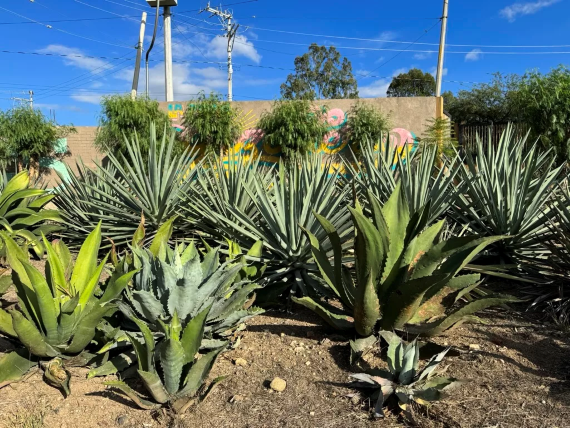
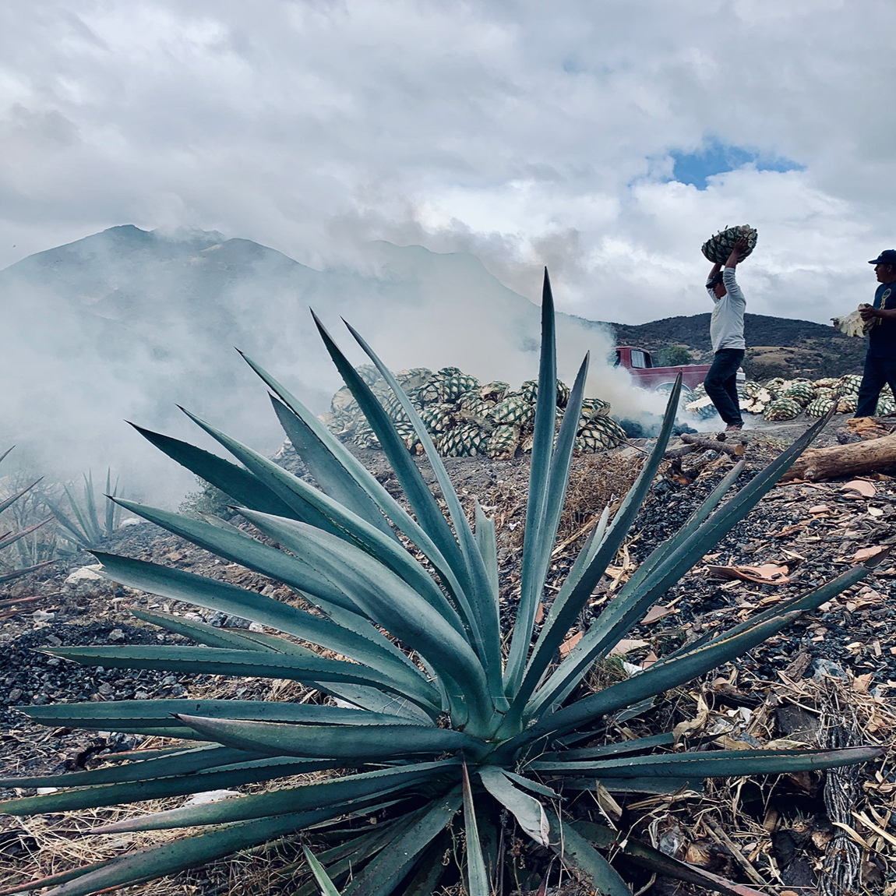
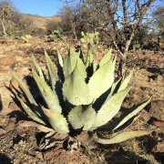
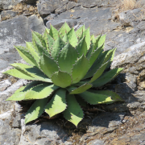
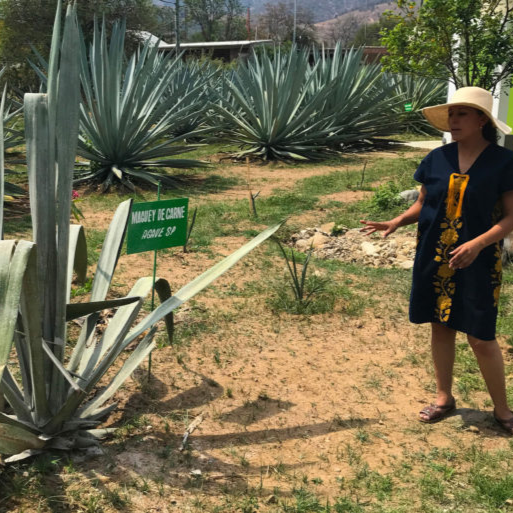
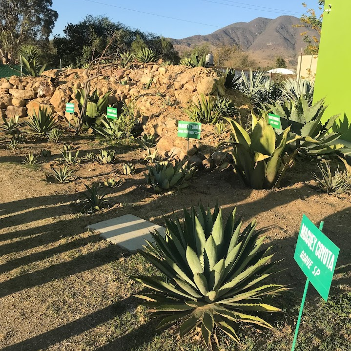

What is Mezcal made from?
Agave Species
The word mezcal comes from the Nahuatl words metl and ixcalli, meaning "cooked agave." The spirit takes its name from the plant it comes from and the process that transforms it.
Over 30 species of agave can legally be used to make mezcal, though in practice a handful dominate production. Espadín accounts for the vast majority of what's bottled, prized for its adaptability and relatively quick maturation. Tobalá, Tepeztate, and Cuishe are among the wild varieties increasingly sought after for their complexity, while Tobaziche and Arroqueño round out the agaves most commonly found in the hands of serious mezcaleros.
Because the same agave species can carry different colloquial names depending on the region, knowing both the common and scientific name is key to understanding exactly what's in your glass.
where is mezcal made?
Top Mezcal Producing Regions

Oaxaca
Oaxaca is the heartland of mezcal, responsible for the majority of what's produced and exported worldwide. Its mountainous terrain and wide range of microclimates make it home to a remarkable diversity of agave species. Production here is deeply rooted in tradition, with many palenques still using earthen pit roasting, stone tahona mills, and open-air fermentation passed down through generations.
Commonly Used Agave:
Espadín, agave angustifolia
Tasting Notes:
Espadín-based mezcals from Oaxaca tend to be approachable yet complex, with notes of smoke, roasted agave, citrus, and a subtle sweetness that lingers on the finish.

Durango
Durango sits in the Sierra Madre Occidental, a rugged high-altitude region where the cenizo agave grows wild across semi-arid hillsides. Production here is smaller in scale and far less commercialized than Oaxaca, with most mezcal made by families who have worked the same land for generations. The isolation of the region has helped preserve some of the most traditional distillation methods still practiced today.
Commonly Used Agave:
Cenizo, agave durangensis
Tasting Notes:
Cenizo mezcals are known for their herbaceous, earthy character with notes of dried fruit, green agave, and a clean mineral finish with light smoke.

Guerrero
Guerrero is one of mezcal's most underrecognized regions, despite having a deep and well-established production history. The tropical and semi-tropical landscape gives cupreata agave distinct growing conditions not found elsewhere, resulting in a spirit with a character all its own. Most production remains small and family-run, with mezcal deeply woven into local ceremony and daily life.
Commonly Used Agave:
Cupreata, agave cupreata
Tasting Notes:
Cupreata mezcals are often described as lush and vegetal, with notes of tropical fruit, green herbs, white pepper, and a softer smoke than what you'd find in Oaxacan expressions.
Gallery
Photos from my mezcal explorations


